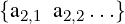

| Up | Next | Prev | PrevTail | Tail |
Author: Arthur Norman
This package provides a parser-generator, somewhat styled after yacc or the many programs available for use with other languages. You present it with a phrase structure grammar and it generates a set of tables that can then be used by the function yyparse to read in material in the syntax that you specified. Internally it uses a very well established technique known “LALR” which takes the grammar are derives the description of a stack automaton that can accept it. Details of the procedure can be found in standard books on compiler construction, such as the one by Aho, Ullman, Lam and Sethi [ALSU06].
At the time of writing this explanation the code is not in its final form, so this will describe the current state and include a few notes on what might chaneg in the future.
Building a parser is done in Reduce symbolic mode, so say "symbolic;" or "lisp;" before starting your work.
To use the code here you use a function lalr_create_parser, giving it two arguments. The first indicates precedence information and will be described later: for now just pass the value nil. The second argument is a list of productions, and the first one of these is taken to be the top-level target for the whole grammar.
Each production is in the form
which in regular publication style for grammars might be interpreted as meaning
| LHS | ⇒ | rhs1,1 rhs1,2… | |||||
| | | rhs2,1 rhs2,2… |  | |||||
| … | |||||||
| ; |
The various lines specify different options for what the left hand side (non-terminal symbol) might correspond to, while the items within the braces are sematic actions that get obeyed or evaluated when the production ruls is used.
Each LHS is treated as a non-terminal symbol and is specified as a simple name. Note that by default the Reduce parser will be folding characters within names to lower case and so it will be best to choose names for non-terminals that are unambiguous even when case-folded, but I would like to establish a convention that in source code they are written in capitals.
The RHS items may be either non-terminals (identified because they are present in the left hand side of some production) or terminals. Terminal symbols can be specified in two different ways.
The lexer has built-in recipes that decode certain sequences of characters and return the special markers for !:symbol, !:number, !:string, !:list for commonly used cases. In these cases the variable yylval gets left set to associated data, so for instance in the case of !:symbol it gets set to the particular symbol concerned. The token type :list is used for Lisp or rlisp-like notation where the input contains ’expression or ‘expression so for instance the input ‘(a b c) leads to the lexer returning !:list and yylvel being set to (backquote (a b c)). This treatment is specialised for handling rlisp-like syntax.
Other terminals are indicated by writing a string. That may either consist of characters that would otherwise form a symbol (ie a letter followed by letters, digits and underscores) or a sequence of non-alphanumeric characters. In the latter case if a sequence of three or more punctuation marks make up a terminal then all the shorter prefixes of it will also be grouped to form single entities. So if "<–>" is a terminal then ’<’, ’<-’ and ’<–’ will each by parsed as single tokens, and any of them that are not used as terminals will be classified as !:symbol.
As well as terminals and non-terminals (which are writtent as symbols or strings) it is possible to write one of
| (OPT s1 s2 …) | 0 or 1 instances of the sequence s1, … |
| (STAR s1 s2 …) | 0, 1, 2, …instances. |
| (PLUS s1 s2 …) | 1, 2, 3, …instances. |
| (LIST sep s1 s2 …) | like (STAR s1 s2 …) but with the single item |
| sep between each instance. | |
| (LISTPLUS sep s1 …) | like (PLUS s2 …) but with sep interleaved. |
| (OR s1 s2 …) | one or other of the tokens shown. |
When the lexer processes input it will return a numeric code that identifies the type of the item seen, so in a production one might write (!:symbol ":=" EXPRESSION) and as it recognises the first two tokens the lexer will return a numeric code for !:symbol (and set yylval to the actual symbol as seen) and then a numeric code that it allocates for ":=". In the latter case it will also set yylval to the symbol !:!= in case that is useful. Precedence can be set using lalr_precedence. See examples below.
| Up | Next | Prev | PrevTail | Front |